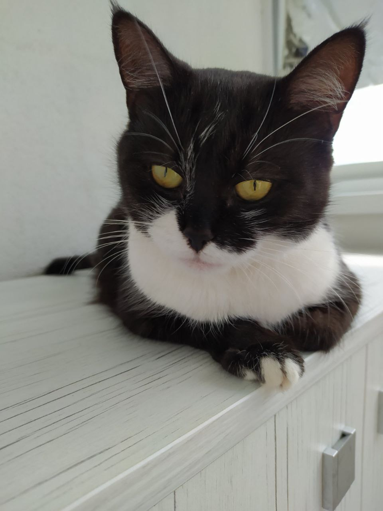

Это приключенческий шутер с видом от первого лица, события которого разворачиваются в альтернативной реальности. Игрокам отводится роль агента советской разведки, который отправляется на сверхсекретный объект, с которым внезапно прервалась радиосвязь. В игре использован саундтрек, вызывающий ностальгию. Это одна из причин популярности Atomic Heart.
Это захватывающая ролевая игра в жанре экшн с открытым миром, который известен по книгам о Гарри Поттере. Впервые станьте участником событий, которые разворачиваются на территории Хогвартса в 1800-х годах. Ваш персонаж - студент, владеющий ключом к древней тайне, которая способна разорвать волшебный мир на части. Теперь вы можете взять под контроль действие и оказаться в центре вашего собственного приключения в мире волшебства. Ваше наследие – это то, что вы делаете.Игра предложит открытый мир с полным набором ролевых элементов, включая кастомизацию персонажа, зельеварение, изучение заклинаний и исследования.
Сиквел влиятельной Breath of the Wild (2017) получился еще лучше, больше и разнообразнее первой части. Новая «Зельда» предлагает исследовать не только поля, равнины, леса и горы фэнтезийного королевства Хайрул, но и зловещие подземелья и скрытые в облаках руины древней цивилизации. Ультимативное приключение на десятки, а то и сотни часов — самая высокооцененная критиками игра этого года (96 баллов на Metacritic), которая к тому же не покидает чартов продаж. Возможно, последняя большая игра, которая закрывает эпоху гибридной консоли Nintendo Switch.
Игру делала российская компания Mundfish — она была создана в , 2016 году, а ее владельцы собирались разработать отечественную игровую франшизу уровня BioShock или Fallout. Через два года они выпустили лишь виртуальный аттракцион Soviet Lunapark VR, который показывал некоторые локации будущего хита. Потом в прессу попала информация о трудностях работы над самой игрой, которые в компании поспешили опровергнуть. Но до широкого анонса дело дошло лишь в 2022 году — разработчики пообещали, что Atomic Heart выйдет сразу на всех платформах и будет доступна игрокам во всем мире. Релиз состоялся 21 февраля 2023-го, но без ложки дегтя не обошлось. За несколько дней до выхода в Сеть попал взломанный архив с игрой — правда, без возможности выбирать уровень сложности и с определенными, пусть и не критичными «багами».
| Игра | Цена | ||
| Steam | EGS | XBOX | |
| Atomic Heart | 150 BYN | 145 BYN | 130 BYN |
| Hogwarts Legacy | 165 BYN | 170 BYN | 155 BYN | The Legend of Zelda: Tears of the Kingdom | 180 BYN | 160 BYN | 175 BYN |